Eclipse是功能强大Java集成开发工具。它可以极大地提升我们的开发效率。可以自动编译，检查错误。在公司中，使用的就是Eclipse进行开发。
安装 (只需要解压后就能使用)
卸载（只需要将文件夹删除就可以了）
注意： 开发软件的安装目录中，尽量不要出现空格与中文
在当前阶段，我们只需要完成最基本的Java文件编写，其他功能跟随日常教学慢慢渗透学习。
使用步骤：
1.开启，选择工作空间，如下图
工作空间：指的是将来编写的java源文件存放的位置
下图中的复选框“□”，如果选中，表示使用当前工作空间为Eclipse的默认工作空间，以后启动Eclipse时，不在提示选择工作空间。
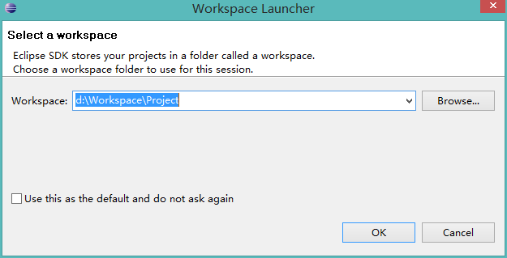
2.在左侧空白区域右键 或者 选中File菜单栏， 选择new--> 创建java项目编写项目名称，点击Finish 完成。如下图
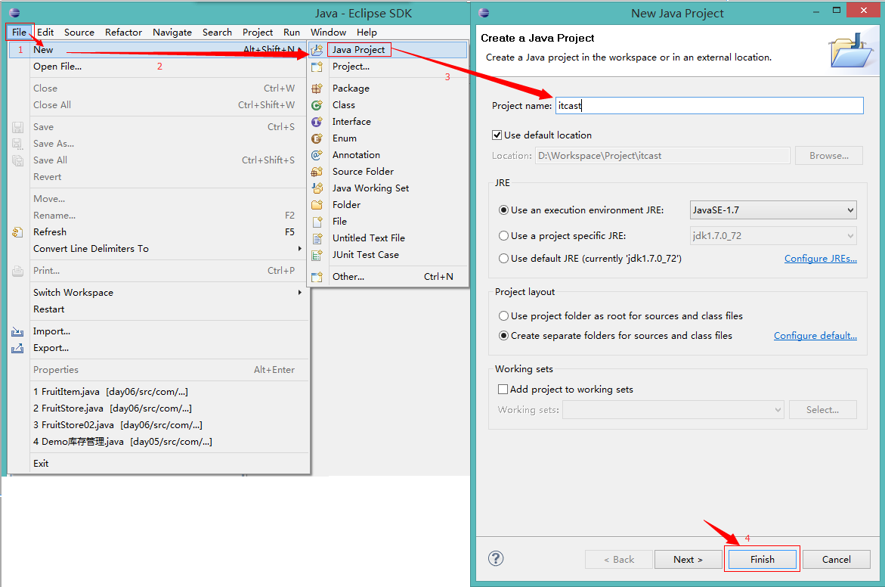
3.展开项目，选中源包SRC后，在项目的src目录下右键创建类，指定类的名字 Hello，创建main方法并编写源代码System.out.println("HelloWorld");
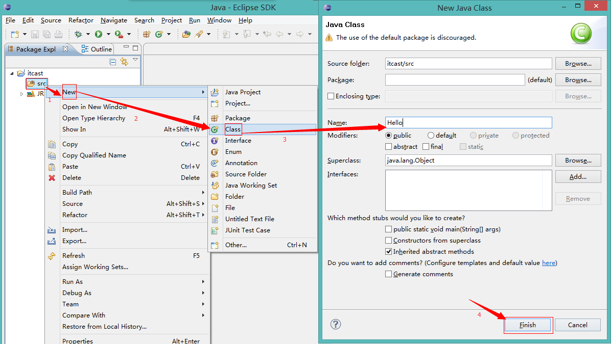
4.编译与执行
编译：自动编译，当java代码保存的时候，自动 编译class文件
执行：
方式1：点击菜单工具栏中的 绿色带有三角形的 run按钮 运行
方式2：点击菜单栏中Run， 点击Run 运行 快捷键是 ctrl+F11
方式3：选中要运行的java文件，或者在编写代码的空白区域，右键选择 Run As --> 运行java程序
程序的编译环境和运行环境
编译环境：Window -- Preferences – Java - Compiler
运行环境：Window -- Preferences – Java - Installed JREs
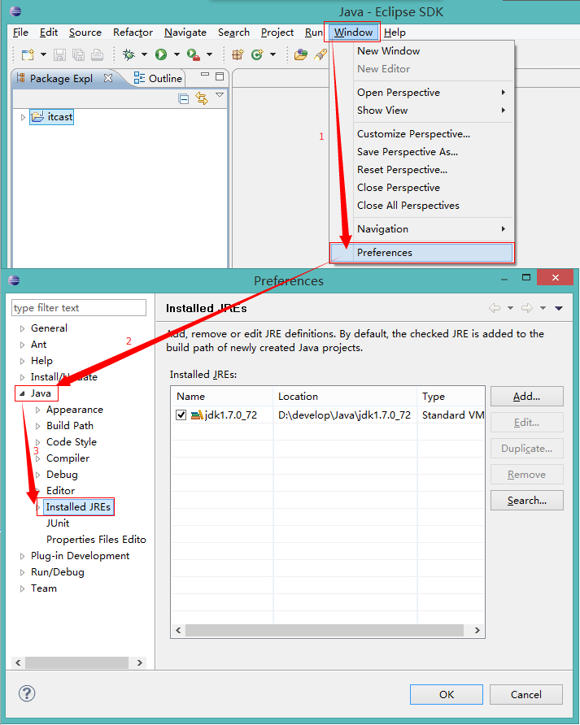
如何显示行号与隐藏行号
显示：在代码区域的左边空白区域，右键 -- Show Line Numbers
隐藏：将上面的操作再做一遍
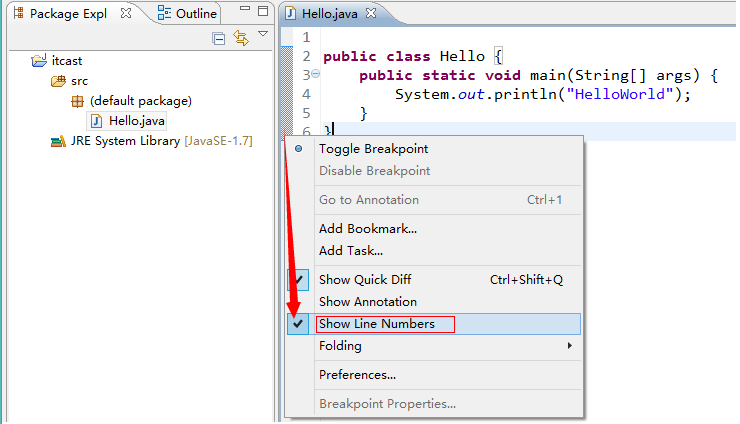
如何更改字体大小与颜色
修改java代码的字体大小与颜色
Window -- Preferences -- General -- Appearance -- Colors and Fonts -- Java -- Java Editor Text Font选中后，点击Edit，进行修改
修改其他字体大小与颜色
Window -- Preferences -- General -- Appearance -- Colors and Fonts -- Bacic -- Text Font 选中后 点击Edit ,进行修改
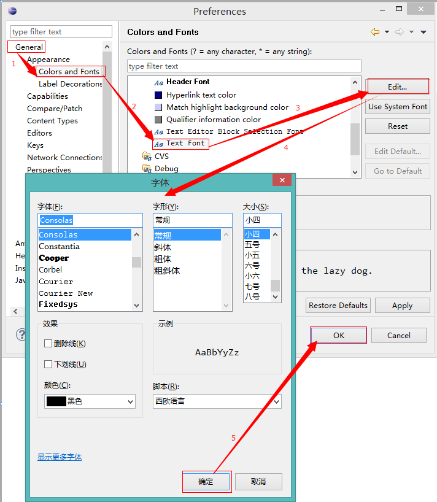
显示的窗口乱了，还原默认显示模式
Window – Perspective -- Reset Prespective
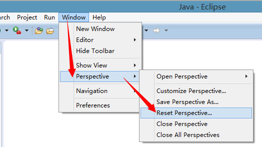
如何去掉默认注释
Window -- Preferences -- Java -- Code Style -- Code Templates -- Comments – Methods，点击Edit ，将注释部分删除 (不建议删除)
Window -- Preferences -- Java -- Code Style -- Code Templates -- Code -- Method body，点击Edit ，将注释部分删除
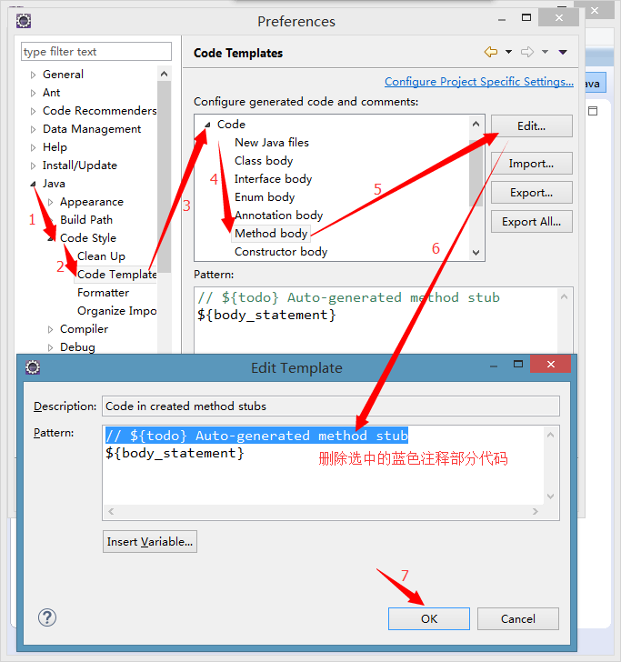
切换工作空间
File – Switch Workspace – 指定工作空间 – ok
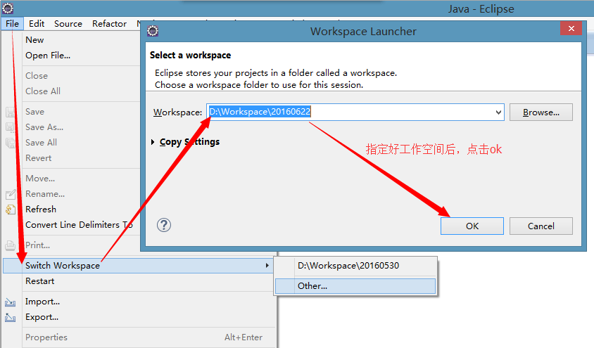
内容辅助键 Alt+/
自动补齐main方法 main 然后 Alt+/
自动补齐输出语句 syso 然后 Alt+/
格式化Ctrl+Shift+f
代码区域右键 -- Source – Format
自动导包： Ctrl+Shift+o
如果当前类在多个包中都存在，这时候，使用Ctrl+shift+o,进行选择一个包导入即可。
注释
单行注释
加注释： 先选中需要注释的内容，然后 Ctrl+/
取消注释：先选中需要取消注释的内容， 然后 Ctrl+/
多行注释
加注释： 先选中需要注释的内容，然后 Ctrl+Shift+/
取消注释：先选中需要取消注释的内容， 然后 Ctrl+Shift+\
断点： 就是一个标记
如何设置断点
代码区域左边的空白位置 双击即可
在哪里加
想看哪个语句的执行结果就在该语句前面加
怎么运行断点的程序
代码区域右键 -- Debug as -- Java Application
显示一个页面，提示是否进入调试页面？ 是否记住当前操作？是(Yes)是（勾选复选框）
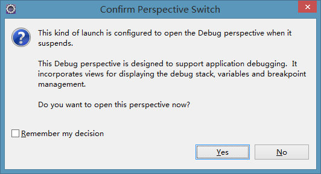
弹出了断点页面
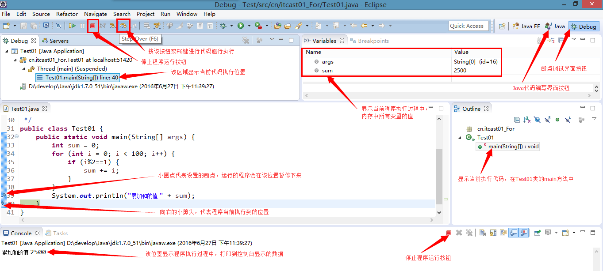
点哪里
点击 工具栏中的Step Over (执行下一行)
快捷键F6 看到每一步程序的执行过程
看哪里
看代码区域： 对照看程序执行步骤
看Debug区域： 对照看程序执行步骤
看varable区域： 观察变量的创建、复制、销毁
如何消除断点
把设置断点的方式再执行一遍
切换到Debug视图，选择 Breakpoints -- Remove All Breakpoints 就是2个XX的图标
在项目区域删除
在左侧PackageExplorer区域对指定项目右键，点击delete删除
在硬盘上删除
在左侧PackageExplorer区域对指定项目右键，点击delete删除,同时选中下面的在硬盘上删除(Delete project contents on disk)
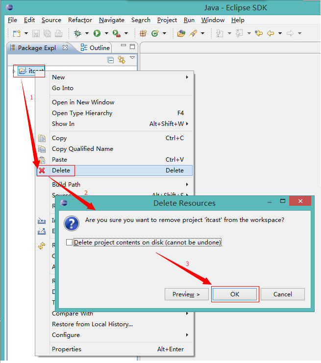
在左侧的PackageExplorer区域右键，选择 import
选择 General -- Existing Projects into Workspace
选择后，点击 next
在新的窗口中，点击 Browse 找到需要导入的项目（注意，找到项目的名字位置就可以了），选中要导入的项目，点击Copy复选框，点击Finish完成。
注意事项
Eclipse中已经存在的同名项目不能再次导入
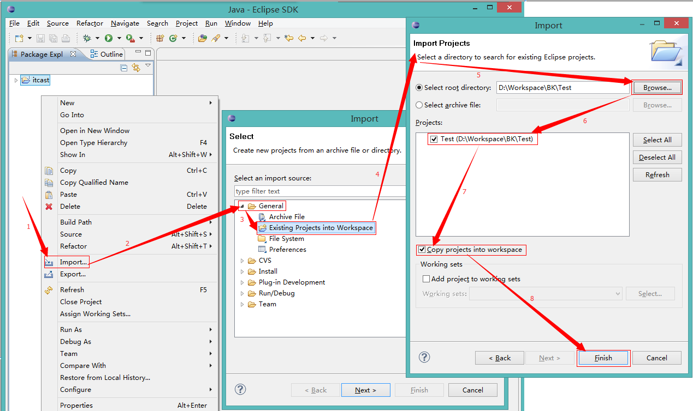